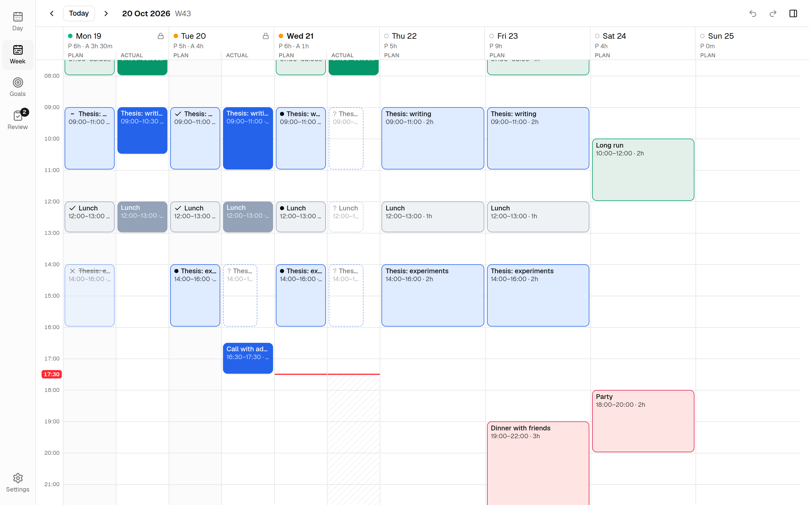
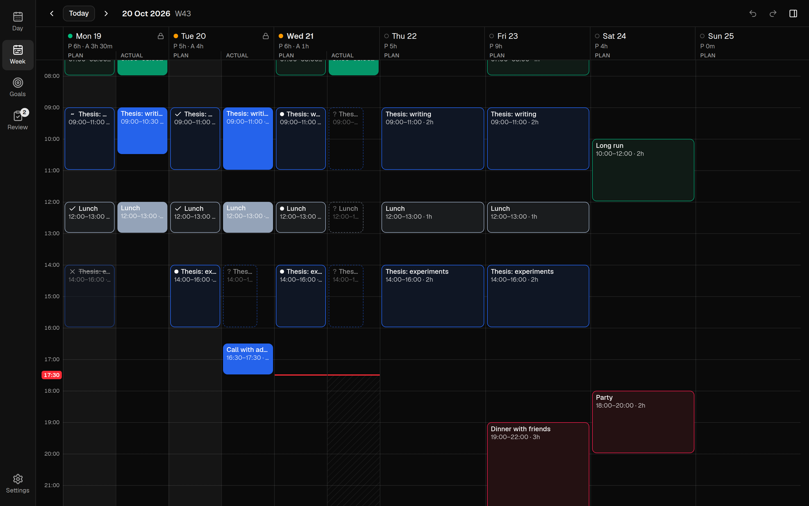
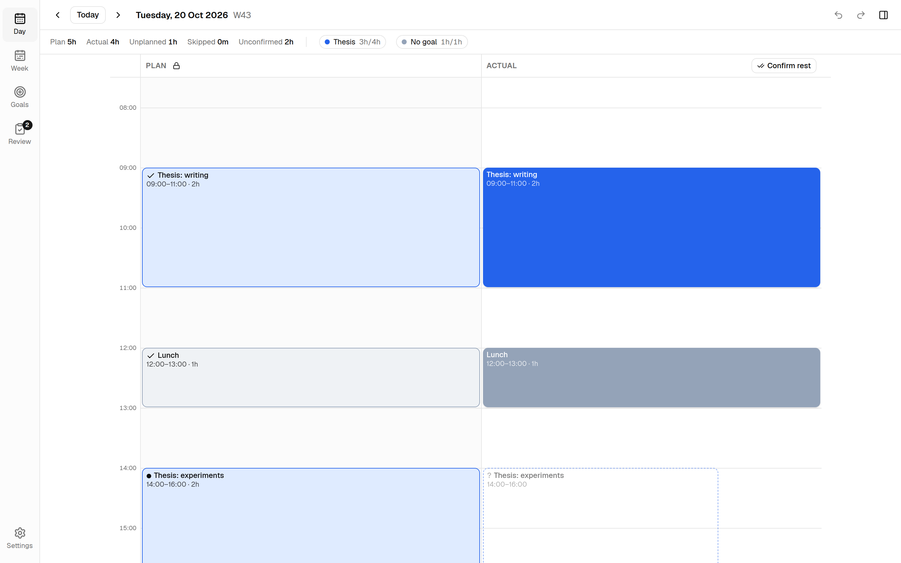
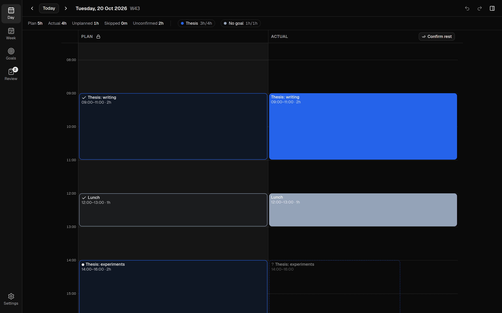

Plan your day. Record what actually happened.
Timeblock is a time-blocking app for your desktop, browser and phone that keeps your plan and your actual day side by side, and shows how both compare with your weekly goals.


How it works
A plan is only useful if you compare it with what happened.
Most calendars show what you intended to do. Timeblock also records what you actually did, so your weekly numbers reflect real time spent.
Plan and Actual, side by side
Every day has two lanes. Block out the day in Plan, then correct the Actual lane as the day unfolds.
- Drag to create, move and resize blocks
- Planned blocks appear as dashed "ghosts" in Actual until you confirm or skip them
- Confirm the rest of the day in one step when things went to plan
- Unconfirmed time never counts as actual


Weekly goals with real targets
Give each goal a weekly target: at least a number of hours (Thesis ≥ 15 h) or at most (Social ≤ 3 h).
- Targets carry forward until you change them
- Past weeks keep the targets they had
- An outcome checklist for each goal and week, with carry-over


A weekly review that adds up
At the end of the week, see target, plan and actual for every goal, its status, completed outcomes and a note for next week.
- On track and at risk statuses for each goal
- A week budget panel you can open at any time
- Carry unfinished outcomes into the next week


Desktop, web and phone
Use it on your computer, in a browser or on your phone.
The desktop app works on its own. Sign in to a free sync account and the same plan is also in the web app, on any browser and on your phone.
Desktop app
For Linux, macOS and Windows. Works fully offline, with or without an account. Download
Web app
The full app in your browser, nothing to install. Sign in or create an account to start. Open the web app
On your phone
Open the web app on your phone and choose Add to Home Screen. It opens like an app and keeps working offline.
Local-first
Your data is a file on your computer.
Timeblock stores everything in a single SQLite database in your user folder. Nothing leaves it unless you sign in to sync.
Private by default
No account needed and no telemetry. The app works fully offline; an optional sync account adds the web app and your phone.
Automatic backups
A daily copy of your database, plus one before every import and upgrade. The newest 14 are kept.
Export anytime
Export everything to readable JSON and import it on another machine.
Built for daily use
Fast with the keyboard, safe to experiment.
Every edit can be undone. Common actions have single-key shortcuts.
Navigate
d w g r switch between Day, Week, Goals and Review. t [ ] move through time.
Log your day
a confirms and s skips a planned block. Shift+A confirms the rest of the day.
Undo anything
Ctrl+Z and Ctrl+Shift+Z undo and redo every change. All shortcuts
Start planning your week.
Timeblock is free and open source under the MIT license.